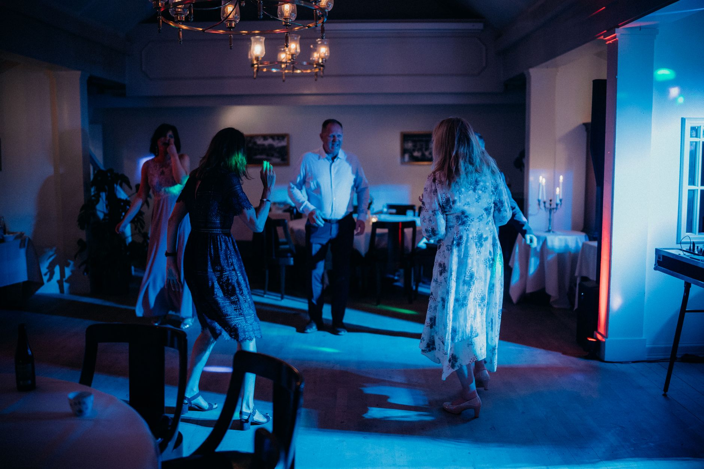
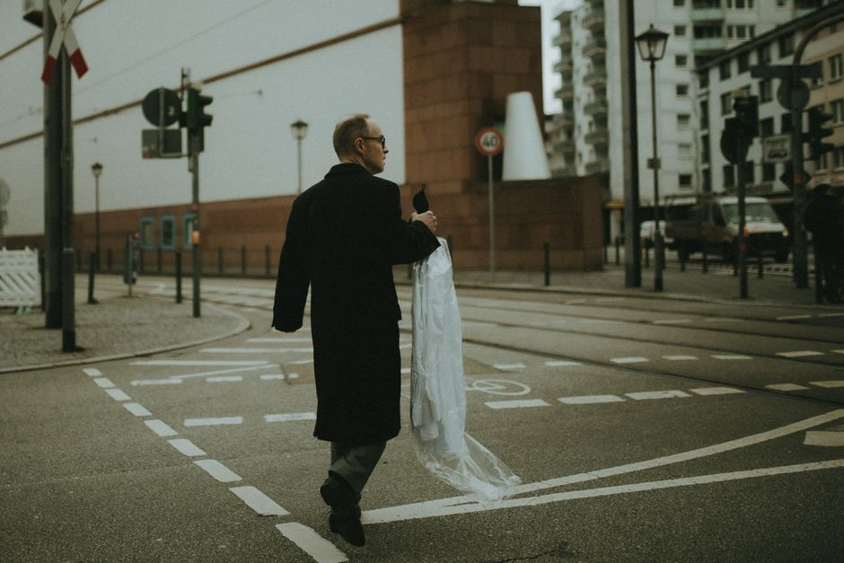
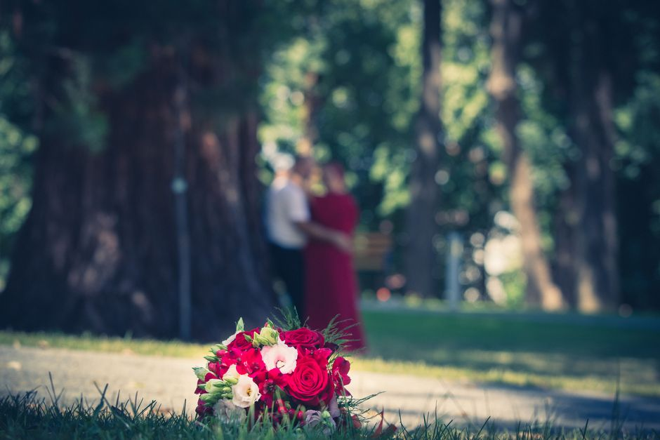
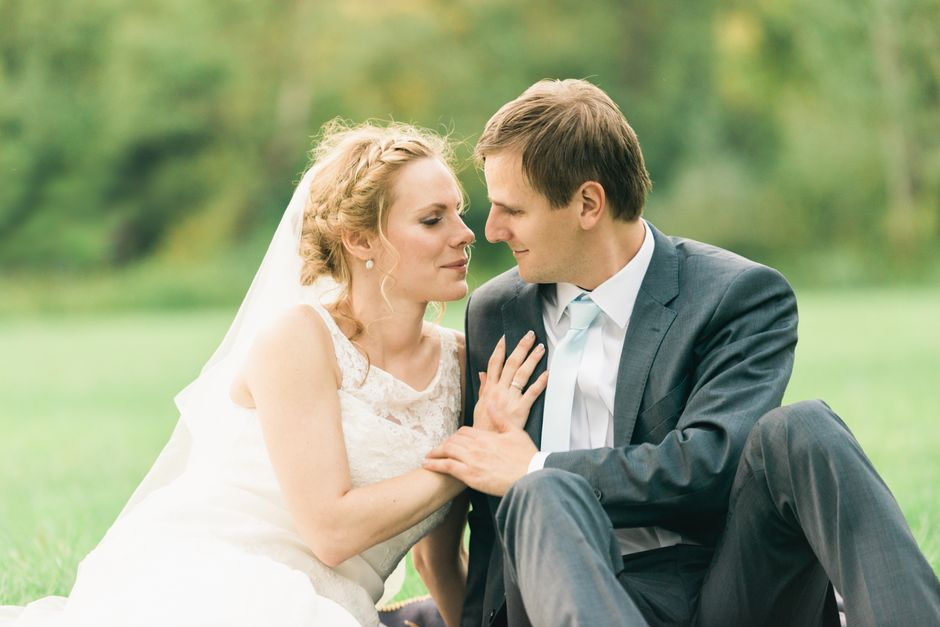
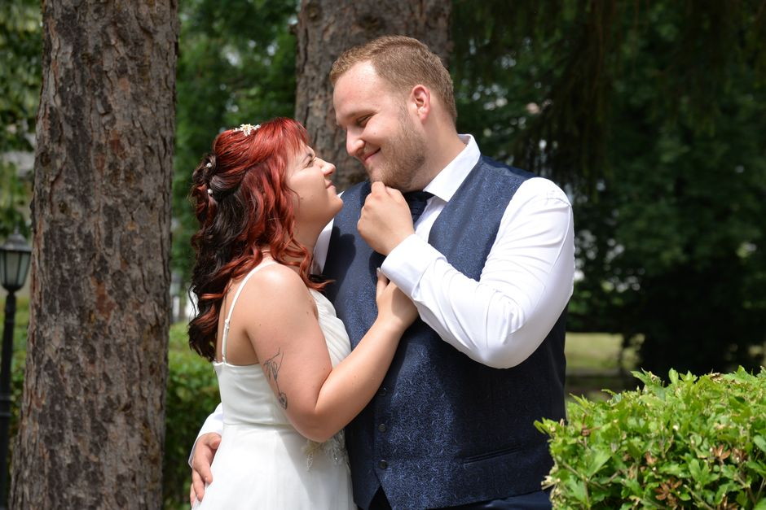
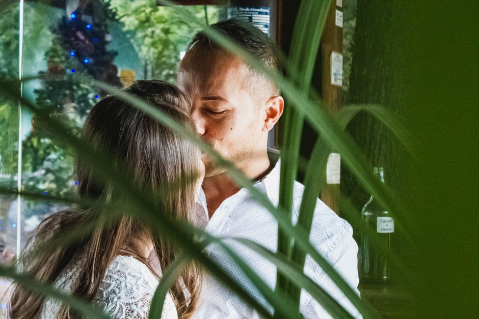
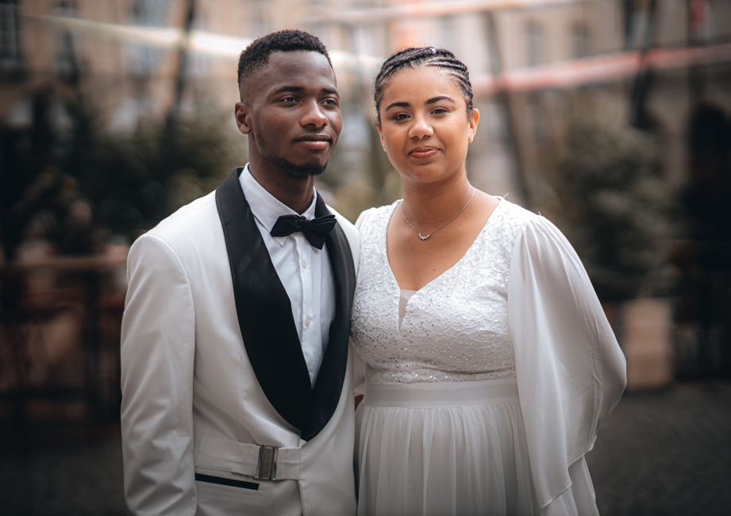

Portrait
Ausdrucksstarke Einzelbilder für Bewerbung, Social Media oder einfach für Sie selbst. Im Studio mit gesetztem Licht oder draußen im natürlichen Umfeld.
Fotograf in Oldenburg

Ausdrucksstarke Einzelbilder für Bewerbung, Social Media oder einfach für Sie selbst. Im Studio mit gesetztem Licht oder draußen im natürlichen Umfeld.
Von den Vorbereitungen über die Trauung bis zur Feier. Reportage-Stil ohne endlose Fotosessions, damit Sie Ihren Tag wirklich erleben.
Einheitliche, professionelle Bilder fürs Team, das LinkedIn-Profil oder die Website. Auf Wunsch direkt bei Ihnen in der Firma.
Entspannte Familien- und Kindershootings, die echte Nähe zeigen statt gestellter Studioroutine. Auch Neugeborene und Generationenbilder.
Firmenfeiern, Jubiläen und Veranstaltungen dezent begleitet. Ich fange Stimmung und Begegnungen ein, ohne im Weg zu stehen.







Seit über zwölf Jahren fotografiere ich in Oldenburg und dem gesamten Ammerland. Angefangen habe ich mit Hochzeiten, heute kommen genauso Familien, Gründer und Unternehmen zu mir, die ein Bild suchen, das nicht nach Katalog aussieht.
Mir geht es nicht um perfekte Technik zum Selbstzweck, sondern um den einen Blick, die kurze Geste, den echten Moment. Ich arbeite ohne Hektik, nehme mir Zeit für ein Vorgespräch und liefere sorgfältig entwickelte Bilder, die Sie in zehn Jahren noch gern ansehen.
Auf Deutsch · English · Español
Portrait
Das kompakte Shooting für ein starkes Einzel- oder Paarportrait. Ideal für Bewerbung, Social Media oder einfach ein schönes Bild von sich selbst.
ab ab 149 € pro Shooting
AnfragenHochzeit
Ihre Trauung von Vorbereitung bis Party. Ich begleite Sie dezent im Hintergrund und halte fest, was sonst im Trubel untergeht.
ab ab 1.290 € pro Hochzeit
AnfragenBusiness
Einheitliche Headshots fürs ganze Team oder authentische Bilder für Website und Karriereseite. Wir kommen auch zu Ihnen in die Firma.
ab ab 290 € ab Grundpaket
AnfragenAlle Preise sind Beispiele und richten sich nach Umfang, Dauer und Anfahrt. Ihr individuelles Angebot bespreche ich vorab persönlich mit Ihnen.
Bei Portrait- und Business-Shootings liefere ich in der Regel innerhalb von ein bis zwei Wochen. Bei Hochzeiten erhalten Sie erste Vorschau-Bilder schon nach zwei Tagen, die komplette Galerie nach etwa vier bis sechs Wochen.
Das höre ich fast in jedem Vorgespräch und am Ende sieht man es keinem der Bilder an. Ich nehme Ihnen die Anspannung, gebe klare kleine Anweisungen und wir arbeiten so lange, bis Sie sich auf den Fotos wiedererkennen.
Ja, im Umkreis des Ammerlands ist die Anfahrt inklusive. Für Termine weiter weg berechne ich eine faire Kilometerpauschale, die wir vorab gemeinsam festlegen.
Erzählen Sie mir kurz von Ihrem Anlass. Ich melde mich zeitnah mit einem passenden Vorschlag und einem konkreten Angebot.